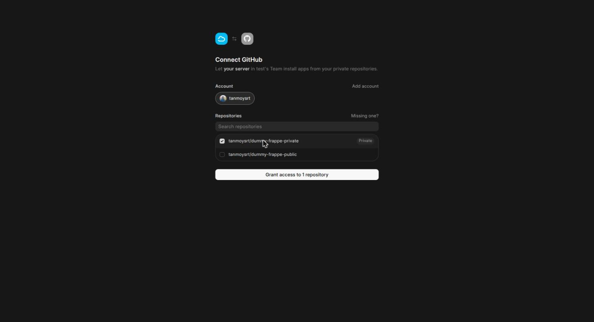
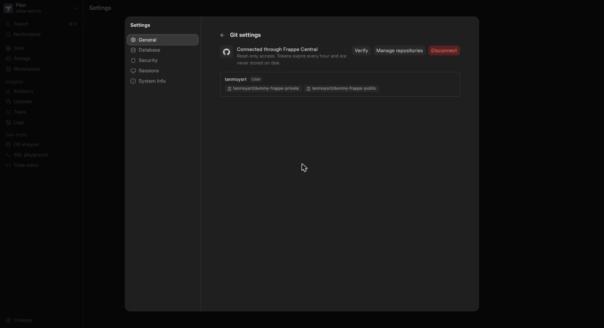
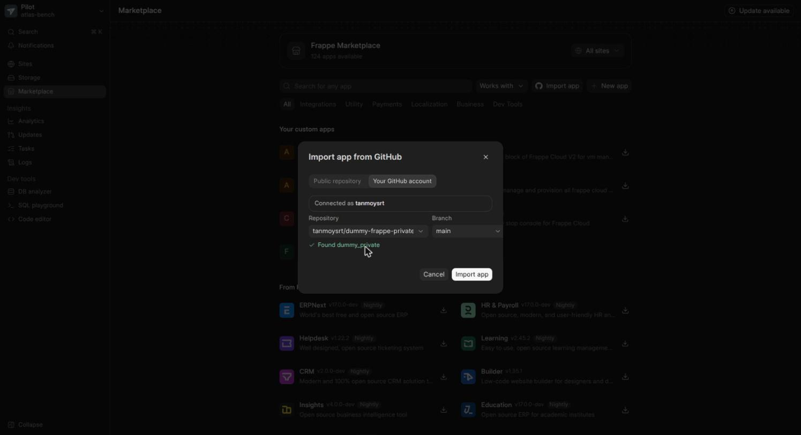

Pilot GitHub App Build
Status page. Last update: 2026-10-16 04:15. Design source: Pilot GitHub App proposal.
Goal
Pilot reads its Central settings from instance metadata. If Central is available, Pilot replaces PAT-based Git access with GitHub App access. If Central is not available, Pilot shows only the PAT form. If Central is available, Pilot also shows a "Connect via Frappe Central" option.
Setup
| Item | Value | Status |
|---|---|---|
| GitHub App | pilot-central-dev, App ID 5337509. Contents read, Metadata read. OAuth during install on. Token expiry on. | Done |
| Private key, client secret, webhook secret | Generated. Kept in a local private folder. The key was checked against the GitHub API. | Done |
| Callback and webhook URL | Cloudflare quick tunnel to central.localhost. The URL changes when the tunnel restarts. Then the App URLs must change too. | Done |
| Test repositories | One private and one public dummy Frappe app in the owner account. | Done |
| Central availability | No new metadata key. Pilot asks Central with its existing token. If Central answers, Pilot shows the Connect option. | Decided |
| Test sites | central.localhost and atlas.localhost on the current bench. Real end-to-end tests only. No test runner on these sites. | Decided |
| Contents permission | Read only for now. Write can come later with a separate push flow. | Decided |
| Layout of Central Settings GitHub tab and GitHub Connection | Mockup sent. Adds a "Create GitHub App" button (GitHub App manifest flow). Repository table keeps Repository ID and Full Name. | Waiting for approval |
Build state
| Step | Where | Status |
|---|---|---|
| Central Settings GitHub tab, GitHub Connection DocType | Central | Done |
| Central Settings "Create GitHub App" button (manifest flow) | Central | Built, not yet run |
central/integrations/github.py and central/api/github.py | Central | Done |
| Connection attempt (Redis, 15 minutes), PKCE, callback, complete | Central | Tested live |
repository_token (one repository, contents: read) | Central | Tested live |
| Webhook with HMAC check | Central | Tested live |
| Central connect page in the dashboard | Central | Tested live |
CentralClient GitHub methods and one token resolver for clone, fetch, branches and app lookup | Pilot | Tested live |
| Admin API: connection-attempts, connection, repositories, disconnect | Pilot | Tested live |
settings/Git.vue: PAT only, or PAT plus Connect through Frappe Central | Pilot | Tested live |
| Disconnect from Pilot | Both | Next |
| Minimal unit tests, docs | Both | Next |
Live checks passed
- Pilot shows "Connect GitHub through Frappe Central" only when Central answers and has a GitHub App.
- Full browser flow: Pilot, Central, GitHub authorize and install, repository grant, back to Pilot.
- Private repository clone with a Central-minted token. Public repository clone with no token. No token in
.git/config. - Import dialog lists only granted repositories. Branch list and app lookup use the App token.
- GitHub webhook delivery returns 200. A removed repository is removed from the grant, and Central then refuses a token for it (403). A bad signature gets 401.
- Refused: a user of another team, a second user on a bound link, a callback with no session, a replayed callback, an expired link.
Screens



Assumptions
- The existing
PUT /git/connectionPAT request stays the same. Records withoutauth_typestay PAT records. - The App private key stays in Central. Pilot gets only a one-repository token that expires in about one hour.
- I do not commit or push without your approval.